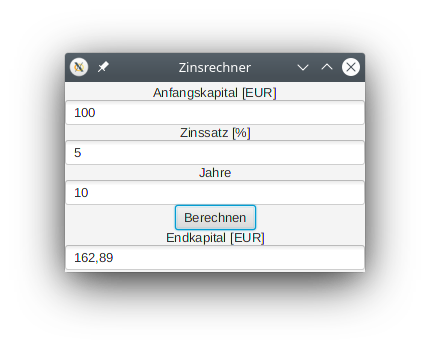

Programmieren 2 (Java) - SS 2020
Prof. Dr.-Ing. Johannes Schildgen
johannes.schildgen@oth-regensburg.de
Übungsblatt 11 vom 25.06.2020
Prof. Dr.-Ing. Johannes Schildgen
johannes.schildgen@oth-regensburg.de
Übungsblatt 11 vom 25.06.2020

Abgabe-Deadline: 24.06.2020 12:00 im Moodle
Erstellen Sie das Layout für das hier abgebildete Zinsrechner-Programm in Form einer FXML:
Zeichnen Sie den Scene-Graph für die Zinsrechner-Anwendung aus Aufgabe 1
Entwickeln Sie den Zinsrechner aus Aufgabe 1 zu Ende.
Häufigste Fehlerursachen: